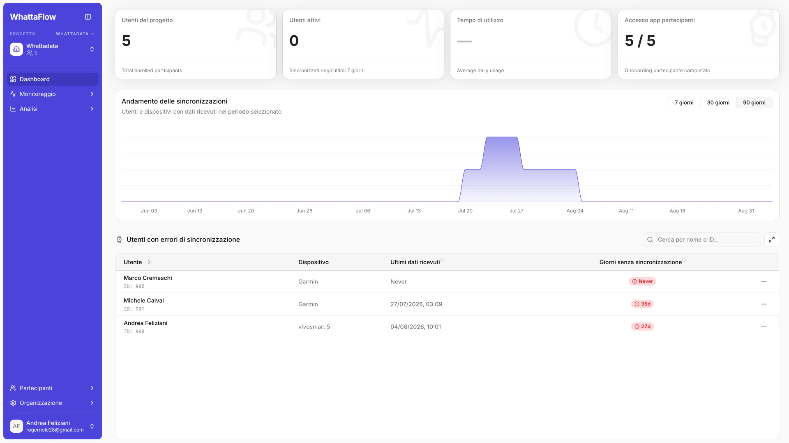
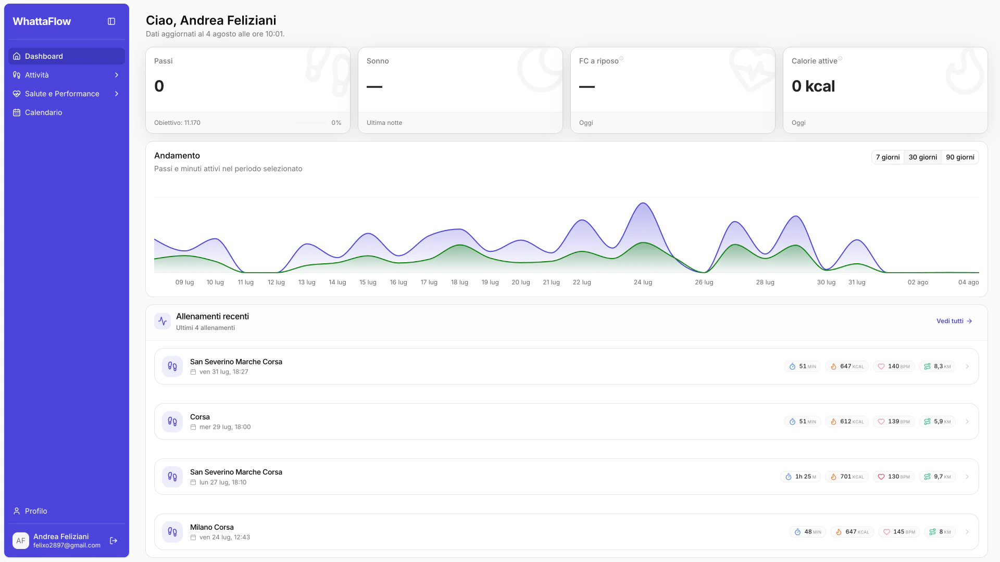

A clear start for participants.
Connect an existing Garmin account once, then continue wearing the device during everyday life.
A wearable data platform that connects each participant’s Garmin account with the project, monitoring and export workflow used by the research team.


Connect an existing Garmin account once, then continue wearing the device during everyday life.
Organise people into projects and groups, monitor data continuity, then analyse and export.
Participants authorise their Garmin account through the dedicated portal.
Researchers structure people and permissions around projects and study groups.
Data availability, device synchronisation and participant compliance stay visible.
Teams move from collected signals to analysis, reports and configurable data exports.
A focused portal connects each Garmin account to the study.
Organise collaborators, participants and groups around each project.
See synchronisation status, missing intervals and compliance signals.
Move from collected data to dashboards, reports and configurable exports.
Visit the dedicated WhattaFlow site to explore the product and choose the right access path.